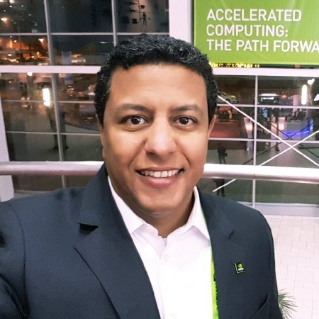
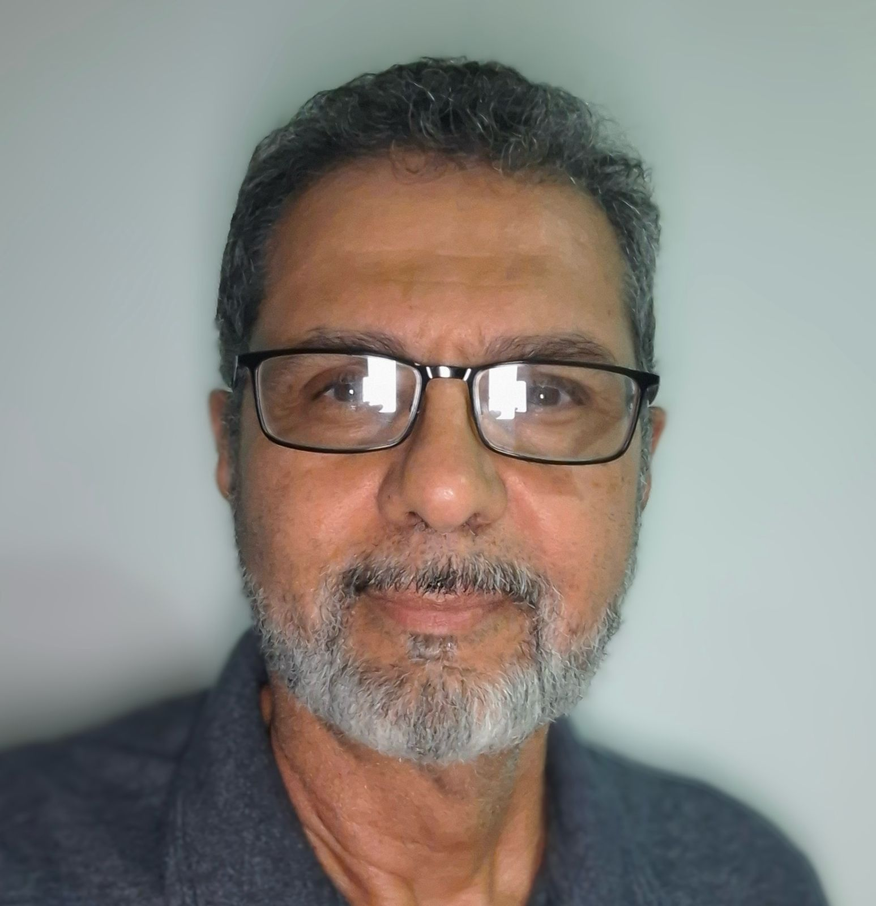
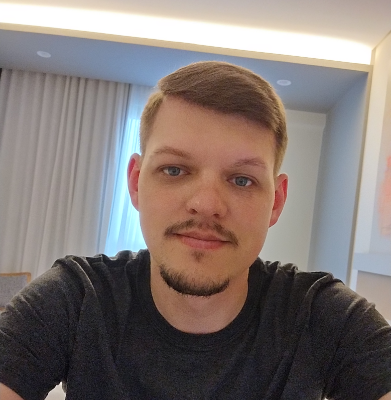

Abaixo, encontram-se detalhes sobre os minicursos aceitos para apresentação na ERAD/RS 2025. As datas e horários ainda não estão definidas.
Minicurso 1
Programação de Alto Desempenho em GPUs com C++
Horário e local: 23/04 (8:30 - 11:30) — LAB1
Resumo: A programação paralela heterogênea tem se consolidado como uma abordagem essencial na área de HPC, especialmente com o uso crescente de GPGPUs. Nesse cenário, a linguagem de programação C++ desempenha um papel central. Contudo, a diversidade e a complexidade dos modelos e ferramentas disponíveis representam uma barreira significativa para iniciantes na área. Assim, o objetivo deste minicurso é fornecer uma visão geral das principais ferramentas e modelos de programação paralela para GPUs em C++, destacando suas características, peculiaridades e aplicabilidades.
Autores

Pablo Hugen
Formado em Ciência da Computação pela Universidade Estadual do Oeste do Paraná (2024), atua profissionalmente como Programador de Sistemas. Entusiasta de programação de baixo nível, computação paralela/distribuída, FOSS e Data Oriented Design.
Minicurso 2
Diretivas Paralelas de Programação
Horário e local: 23/04 (8:30 - 11:30) — LAB2
Resumo: O minicurso tem como objetivo abordar a paralelização de aplicações usando diretivas das interfaces de programação paralela OpenMP e OpenACC. O uso de diretivas tem sido a forma mais fácil de acelerar uma aplicação tanto em CPU como em GPU, sem a necessidade de conhecimentos profundos a respeito de programação paralela. Através de exemplos práticos de aplicações consideradas simples, mas não as triviais vistas geralmente em cursos introdutórios, almeja-se apresentar os principais recursos para a execução concorrente de tarefas e de laços paralelos. As interfaces paralelas selecionadas também permitem o direcionamento da arquitetura alvo, o que posibilita o uso de uma mesma interface tanto para CPU como para GPU.
Autores

Claudio Schepke
Graduado em Ciência da Computação pela Universidade Federal de Santa Maria (2005) e mestrado (2007) e doutorado (2012) em Computação pela Universidade Federal do Rio Grande do Sul, sendo este feito na modalidade sanduíche na Technische Universität Berlin, Alemanha (2010-2011). Realizou um pós-doutorado no Instituto Politécnico de Bragança, Portugal (2024-2025), trabalhando com programação paralela. É professor associado da Universidade Federal do Pampa (UNIPAMPA), campus Alegrete/RS desde 2012, ministrando disciplinas de arquitetura de computadores, sistemas operacionais, compiladores e processamento paralelo. Tem experiência na área de Ciência da Computação, com ênfase em Computação de Alto Desempenho, atuando principalmente nos seguintes temas: interfaces de programação paralela, aplicações científicas e computação em nuvem.

Vinicius Garcia Pinto
Doutor em Computação pelo Programa de Pós-Graduação em Computação da UFRGS em co-tutela com a Université Grenoble Alpes / França. Mestre em Computação pelo Programa de Pós-Graduação em Computação da Universidade Federal do Rio Grande do Sul. Bacharel em Ciência da Computação pela Universidade Federal de Santa Maria. Foi professor da Faculdade São Francisco de Assis, da Universidade de Caxias do Sul e professor substituto da Universidade Federal do Rio Grande do Sul onde também realizou estágio de pós-doutorado. Atualmente é professor do Centro de Ciências Computacionais da Universidade Federal do Rio Grande.
Minicurso 3
Armazenamento – Melhores Práticas – Entendendo do básico ao avançado
Horário e local: 24/04 (8:30 - 11:30) — Florestan 3
Resumo: O minicurso de armazenamento abordará as principais formas de conexões existentes, tais como SATA, SCSI, SAS, iSCSI, Fibre Channel, entre outras. Os participantes poderão compreender as vantagens e desvantagens de cada uma dessas opções, bem como entender a importância da escolha correta na hora de definir a solução de armazenamento adequada para cada situação, desde o seu notebook até um sistema de storage distribuido. Serão discutidos os diversos tipos de dispositivos de armazenamento existentes no mercado, tais como unidades de disco rígido (HDD), unidades de estado sólido (SSD), unidades de fita (tape drive), cartões de memória, entre outros.
Autores

Guilherme Friol
Guilherme Friol é especialista em computação com anos de experiência em ambientes computacionais de alta demanda, virtualização e HPC. Atua como consultor em arquitetura e otimização de sistemas de alto desempenho. Desenvolveu projetos relevantes junto a grandes instituições de pesquisa e notórios nomes da computação nacional em machine learning e redes neurais. Entre os projetos estão: Predição de Inibidores de Protease de Cisteína para Agentes Tripanocidas e Câncer (USP); Simulação de controle de veículo espacial e orientação de órbita (LAC-INPE); Pesquisa sobre plasmas astrofísicos e turbulências espaciais (ITA); Pesquisa em Astrofísica e física molecular (UNIVAP), entre outros.
Minicurso 4
Multi-GPU Multi-Node Programming
Horário e local: 24/04 (8:30 - 11:30) — LAB1
Resumo: Scaling applications to multiple GPUs across multiple nodes requires one to be adept at not just the programming models and optimization techniques, but also at performing root-cause analysis using in-depth profiling to identify and minimize bottlenecks. In this bootcamp, participants will learn to improve the performance of an application step-by-step, taking cues from profilers along the way. Moreover, understanding of the underlying technologies and communication topology will help us utilize high-performance NVIDIA libraries to extract more performance out of the system.
Autores

Pedro Mário Cruz e Silva
Pedro Mário Cruz e Silva é Bacharel em Matemática (1995) e Mestre em Matemática Aplicada e Otimização (1998) pela UFPE, Doutor em Computação Gráfica pela PUC-Rio (2004). Trabalhou por 15 anos no Instituto Tecgraf/PUC-Rio onde criou o Grupo de Geofísica Computacional, durante este período liderou diversos projetos de Desenvolvimento de Software, bem como projetos de Pesquisa na área de Geofísica. Finalizou o MBA em Gestão Empresarial na FGV-Rio. Atualmente é Arquitetura de Soluções Sênior da NVIDIA para América Latina.
Minicurso 5
Processamento e análise de Big Data para aplicação de algoritmos de Machine Learning através da plataforma HPCC Systems
Horário e local: 24/04 (8:30 - 11:30) — LAB2
Resumo: Ao longo do minicurso os participantes terão a oportunidade de conhecer os conceitos essenciais de processamento e análise de volumes massivos de dados (Big Data), e o processo de desenvolvimento de um serviço de consulta através da utilização da plataforma open-source composta por um Cluster Computacional de Alto Desempenho (HPCC Systems), assim como a aplicação de algoritmos de Aprendizado de Máquina, e a possibilidade de aplicar os conhecimentos adquiridos em um ambiente de treinamento disponibilizado em sala de aula.
Autores
Alysson Oliveira
Alysson Oliveira é formado em Engenharia de Computação pela USP e atual engenheiro de software na LexisNexis Risk. Sua principal atuação gira em torno do suporte e desenvolvimento de programas de treinamento para a plataforma HPCC Systems no Brasil, abrangendo o público acadêmico, pesquisadores e profissionais da área da computação e de dados. Também busca estabelecer parcerias com universidades a fim de oferecer aos alunos de graduação a oportunidade de trabalhar em projetos científicos.
Minicurso 6
Programação Avançada de Múltiplas GPUs com OpenACC
Horário e local: 25/04 (8:30 - 11:30) — LAB1
Resumo: Este minicurso tem como objetivo apresentar técnicas de programação paralela para processadores multinúcleo e aceleradores utilizando OpenACC usando cláusulas como, por exemplo, async e wait, com ênfase nos modelos de paralelismo em multi aceleradores. Serão abordadas as modificações necessárias no código-fonte para implementar esses modelos, e os resultados obtidos serão avaliados por meio de métricas de desempenho, como aceleração, eficiência e ocupação.
Autores
Calebe de Paula Bianchini
Calebe de Paula Bianchini é formado em Ciência da Computação na UFSCar, onde também obteve o título de mestre. Finalizou seu doutorado em Engenharia da Computação pela POLI/USP em 2009. Somados, já são mais de 19 anos de experiência com Computação de Alto Desempenho, com participação em diversos projetos de pesquisa e desenvolvimento com Petrobras, Shell, Intel, CERN, dentre outros. Atualmente é professor e pesquisador na Universidade Presbiteriana Mackenzie e de Centro Universitário FEI. É um membro ativo na comunidade brasileira de Computação de Alto Desempenho, especialmente na organização de competições e desafios nesta área. É também Embaixador Universitário do Deep Learning Institute da NVIDIA, ministrando cursos relacionados à Computação de Alto Desempenho em GPUs NVidia.

Evaldo Bezerra da Costa
Evaldo Bezerra da Costa é graduado em Engenharia Elétrica, ênfase em Telecomunicações pela Universidade Estácio de Sá (2010), com mestrado (2014) e doutorado (2022) em Informática pela Universidade Federal do Rio de Janeiro. Tem experiência na área de Ciência da Computação, atuando principalmente nos seguintes temas: programação paralela, computação de alto desempenho, inteligência artificial e bioinformática.

Gabriel Pereira da Silva
Gabriel P. Silva tem doutorado em Engenharia de Sistemas e Computação pela Universidade Federal do Rio de Janeiro. Atualmente é Professor Titular do Instituto de Computação da UFRJ. Tem larga experiência na área de Ciência da Computação, com ênfase em Arquitetura de Sistemas de Computação, atuando principalmente nos seguintes temas: arquitetura de computadores, programação paralela, computação de alto desempenho e internet das coisas.
Minicurso 7
Maximizando o Potencial da IA Generativa com Computação de Alto Desempenho
Horário e local: 25/04 (8:30 - 11:30) — LAB2
Resumo: Modelos de Inteligência Artificial Generativa, como ChatGPT da OpenAI, Llama da Meta e Stable Diffusion, estão revolucionando a forma como interagimos com a tecnologia. No entanto, essas aplicações demandam alto desempenho computacional para tarefas como inferência e fine-tuning. Este minicurso apresenta uma abordagem prática e técnica para otimizar o desempenho da IA Generativa em ambientes de computação de alto desempenho (HPC), explorando comparações diretas do desempenho entre CPUs, GPUs e TPUs. Os participantes aprenderão a configurar ambientes no Google Colab, utilizar ferramentas como PyTorch, TensorFlow e Hugging Face, e realizar benchmarks práticos para compreender as variações de desempenho entre diferentes arquiteturas de computadores. O minicurso também abordará a quantização para otimização de memória e estratégias para fine-tuning de modelos menores e acessíveis em GPUs e TPUs de baixa capacidade. Este minicurso é ideal para profissionais, acadêmicos e estudantes interessados em explorar o impacto da computação de alto desempenho na prática da IA Generativa, com foco em aplicações reais, como geradores de texto e imagens, modelos de linguagem para chatbots e integração de modelos com aplicações reais.
Autores
Matheus Serpa
Matheus da Silva Serpa é Doutor em Computação pela UFRGS e está cursando o MBA Executivo em Liderança e Inovação pela Fundação Getulio Vargas (FGV). Possui Mestrado em Computação pela UFRGS, com um período sanduíche na Université de Neuchâtel, Suíça, e é Bacharel em Ciência da Computação pela UNIPAMPA. Atua ativamente na comunidade de HPC, oferecendo minicursos sobre programação paralela, distribuída, aceleradores e inteligência artificial em eventos como ERAD/RS, SSCAD e no Programa de Verão do LNCC.

Cristiano Alex Kunas
Cristiano Alex Kunas é doutorando pela Universidade Federal do Rio Grande do Sul (UFRGS), sob orientação do Prof. Dr. Philippe Olivier Alexandre Navaux. Obteve o título de Mestre em Computação pela UFRGS em 2023, com foco na otimização do treinamento de modelos de aprendizado de máquina em ambientes de computação em nuvem. É Bacharel em Ciência da Computação pela Universidade Regional do Noroeste do Estado do Rio Grande do Sul (UNIJUI). As principais áreas de pesquisa são computação de alto desempenho e computação em nuvem.

Philippe O. A. Navaux
Philippe O. A. Navaux é professor emérito do Instituto de Informática da UFRGS, Doutor em Computação pelo INPG, França, 1979. Pesquisador nível 1 do CNPq nas áreas de Arquitetura de Computadores e HPC. Orientou mais de 100 estudantes de doutorado e mestrado e publicou mais de 400 artigos em periódicos e conferências. Sócio da SBC, SBPC, ACM e IEEE. Foi coordenador do Comitê da Computação da Capes, CNPq e Fapergs. Foi conselheiro da UFRGS, da Fapergs, do CATI/MCTI e do LNCC. Atualmente é membro do conselho do CIEE-RS e presidente do Conselho do SCALAC.